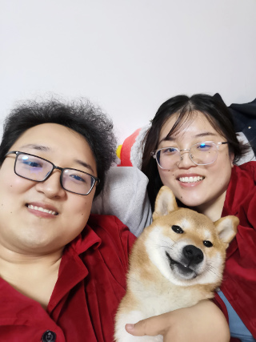
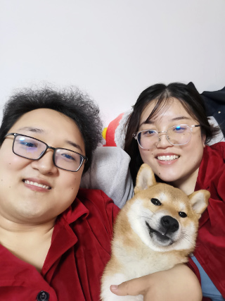

first record
2021-5-21
嘟儿:
我想用这里来记录一些我们的点点滴滴
比如今天早上抱着嘟儿说没礼物的时候十分愧疚
突发奇想搞了这样一个东西
比较粗糙
但还是希望嘟儿能开心（撒娇）
ps 下周还有个算是惊喜吧
希望我们越来越好！

嘟儿:
我想用这里来记录一些我们的点点滴滴
比如今天早上抱着嘟儿说没礼物的时候十分愧疚
突发奇想搞了这样一个东西
比较粗糙
但还是希望嘟儿能开心（撒娇）
ps 下周还有个算是惊喜吧
希望我们越来越好！

老婆生日快乐！再过两天就是老婆生日啦！ 给老婆过的第六个生日啦
这次突然有一些感想。 之前在考虑给老婆的生日礼物时，总是在想老婆喜欢什么，老婆需要什么， 这样就像解一个难题，一个无限的轮回。
今年突然转换了一下思路，我想，其实重要的不一定是猜老婆想要什么， 更重要的是确信自己带给了老婆快乐，而带去快乐的方式有很多种。
比如回忆，比如陪伴，这两样基础上再加上心旷神怡的环境， 共同奔赴的目标，互动中比如心有灵犀产生的幸福感，就很好啦！
有点惭愧，之前想东想西，让我们都不痛快，老公有主要责任
以后还是继续努力吧！希望这次生日老婆会喜欢
期待!
今天老婆应该会收到第一个礼物啦。。。 没错，就是门口那个快递。
老公左思右想，觉得老婆选照片这个活动很温馨，那既然打印了相片肯定缺个相册， 所以马上选了一个老婆期望的那种覆膜相册。
相册上写的是我们，you & me，这个也是老公挑选了半天选中的，有两个彩蛋相呼应吧
总体就是这些吧，老公下单之后想到还不如送到老公公司，自己亲自拿回去给老婆，但是 已经来不及了，手快选了家里，JD又不让改地址，这样就只好老婆先回家的时候看到地上躺着的快递了，哎。
说到这里，老婆肯定会想，诶这个礼物和23号写的那些感悟有毛线关系呢？ 哎，老公想的就是：陪着老婆一起选照片一起拾起我们的回忆，肯定很开心嘛， 这时候有个新相册助兴，肯定会比较开心，更有仪式感，老婆有已经打印好的照片也可以马上放进去
希望老婆喜欢，(☆▽☆)
今天教嘟儿更新和维护我们温馨的网页
嘟儿:
又是一个情人节，又是一个恋爱纪念日，5年啦，5年了哟
不长也不短，5年我们经历了许多
还记得之前复盘这几年新年时候我们在干嘛
2016，在家，快要在一起啦
2017，在天津，在一起跨年
2018，在北京，在一起跨年
2019，在日本，在一起跨年
2020，有了狗子
2021，等来了呦呦
呦呦的到来，给我们的小家增加了一些幸福和烦恼，让老婆倍受辛苦，老公心里十分的愧疚
情人节还是希望老婆开心快乐，昨天让老婆扫兴真的对不起，老公努力，一定要在产假结束前，给老婆一个完美的旅行。认真。
老婆节日快乐！
丁丁： 情人节快乐！
好久没有用电脑打字都有些生疏了
YOYO出生后过去的种种仿佛都是前尘旧梦
如果要细细回首还需要一定时间来“读档”
我好像还是我，但又和以前的我截然不同
这段时间家里发生的种种，有很多需要老婆反思和调整的地方
我们的人生旅途打开了新的脚本，遇到了各种听说过没见过的“怪兽”
成为“父母”虽然是大多数人的选择，听起来也不足为奇
但是一座只有经历过的人才懂得的秘密花园
2022年 希望自己能更成熟稳重 老婆也努力
繁杂世界 爱你胜过当初